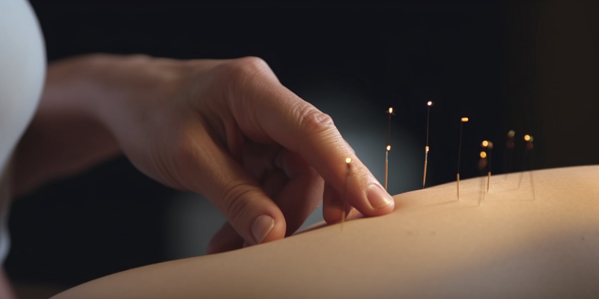
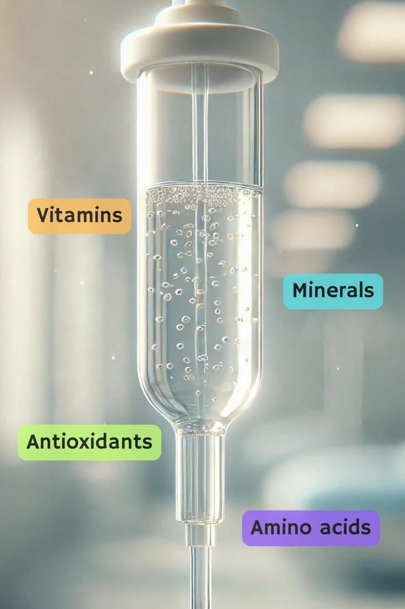
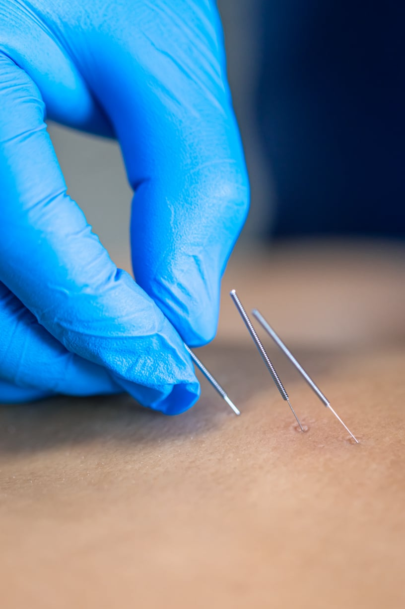
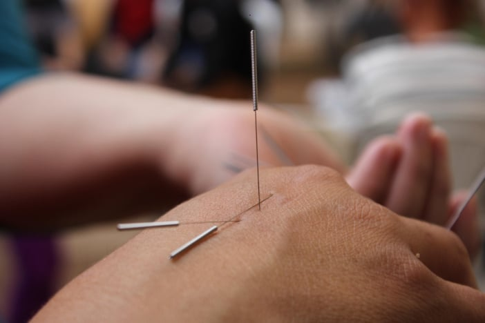
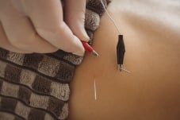
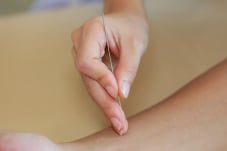
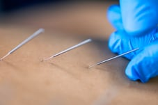

No Code Website BuilderLa sueroterapia, también llamada terapia intravenosa (IV), es un tratamiento que consiste en la administración de una mezcla personalizada de vitaminas, minerales, antioxidantes, aminoácidos y directamente en el torrente sanguíneo mediante una vena.
La suero terapia es un tratamiento que consiste en la administración de líquidos y nutrientes directamente en el torrente sanguíneo mediante una vía intravenosa (IV). Se utiliza principalmente para:
Es útil cuando el cuerpo está deshidratado debido a vómitos, diarrea, ejercicio intenso o desnutrición.

Aporta
electrolitos como sodio, potasio y calcio, que son esenciales
para el funcionamiento de los nervios y los músculos.
Muchas veces se combinan vitaminas como la vitamina C, el complejo B o minerales.

Los atletas recurren a la suero terapia para rehidratarse y reponer nutrientes rápidamente después de entrenamientos intensos o competiciones.





Algunas personas
optan por combinar ambos tratamientos para obtener los
beneficios de ambos mundos: la hidratación y reposición de
nutrientes rápidos de la suero terapia, junto con los efectos
restauradores y equilibrantes de la acupuntura.
Ambos tratamientos pueden ser útiles para mejorar la salud
física y mental, pero es importante asegurarse de que sean
administrados por profesionales capacitados para evitar
complicaciones o efectos secundarios.
¿Estás pensando en probar alguno de estos tratamientos?
La acupuntura es
una práctica de la medicina tradicional china que utiliza
agujas finas para estimular puntos específicos en el cuerpo.
Aunque ha sido utilizada por miles de años, en las últimas
décadas se ha ganado popularidad a nivel mundial por su
efectividad en el manejo de diversos problemas de salud. Los
beneficios de la acupuntura pueden ser bastante variados, ya
que trabaja sobre la energía vital (Qi) y busca restablecer el
equilibrio en el cuerpo y la mente.
Aquí te dejo algunos de los beneficios más destacados de la
acupuntura:
Este es uno de
los beneficios más conocidos de la acupuntura. Se utiliza
ampliamente para tratar diversos tipos de dolor:
Dolor crónico: como el dolor de espalda, dolor en las
articulaciones, cuello, cabeza o migranas.
Dolor postquirúrgico: ayuda en la recuperación de cirugía al
reducir el dolor y acelerar el proceso de sanación.
Dolores musculares y articulares: el tratamiento puede aliviar
el dolor relacionado con condiciones como artritis,
fibromialgia y dolor lumbar.
Sueroterapia y Acupuntura Tradicional
9:00 - 18:00
No Code Website Builder